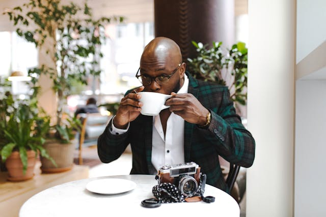

![drink-to-go--v1]()
En COLOR CARTON, no solo nos enfocamos en la calidad de hacer un rico cafe. Si no que tambien queremos que lo disfrutes en un agradable lugar. Tenemos nuestros establecimientos en los mejores lugares para que no solo tomes cafe, si no que vivas una experiencia unica en cada sorbo de cafe...☕
